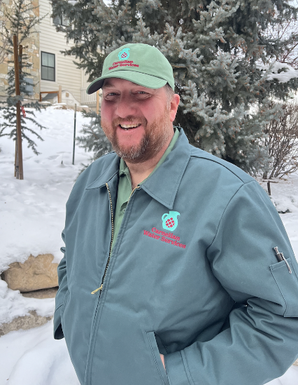

Carnelian Water Services is a site for my Dad's new company. He is offering the service of providing salt pallets to replace the used ones for people's salt water softening system.
The project needed to happen to publicize my Dad's new water softening company online. He will be able to use QR codes to share his site quickly and easily. It needs to show what services he provides at what cost.
The user of his website would be the old woman who doesn't have the strength to lift the heavy salt pallets alone. It could also be the dad who wants a break from the arduous task of replacing salt pallets.
I coded the website and came up with some of the design ideas. My cousin Brett was the graphic designer and made the logo and an idea of what the home page of the website would look like.
My dad needed me to get the site done before late December so he could publicize his services as a potential Christmas gift. I also was very overwhelmed and busy with my classes at the time. I also had never coded a website for a company before and my skills only include coding in HTML, CSS, and a tiny bit of JavaScript at that point.
First I went over the site and company idea with my dad. I got clarity on what he wanted to get out of having a website and who his ideal customer was. We then did some sketches together to map out the information hierarchy.
Next I communicated with my cousin Brett, the graphic designer for this project, to see what kind of design, font, and color scheme he was going for. After that I started coding the site. I used examples of other sites for good navigation design, FAQ designs, and pricing table designs. In the end the site was ready to deploy to its already purchased domain. I even helped my dad make flyers with the site QR code.
Unfortunately my dad hasn't moved forward with his business with great effort yet. He had some additional tweaks he wanted to make to the site, but overall it's a very functional and visually pleasing site.